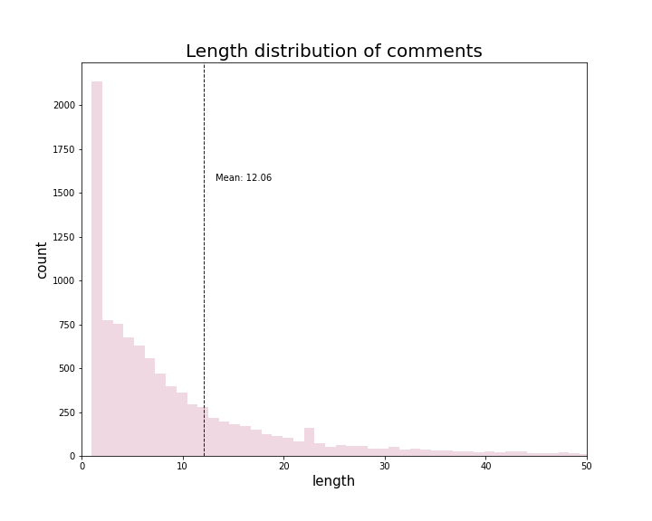
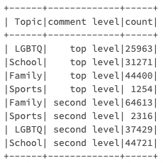

Natural Language Processing
Code and DataAll of our code is in the code/nlp folder, it contains three modules: nlp_processing.html, sentiment_model.html and external_data_eda.html.
ALso, in addition to Reddit data, we collected some external datasets as a supplement for our topic: one is assessments and graduation rates by state and the other dataset is student report of bullying.
Executive summary
By conducting text analysis on the number of comments overtime, we found that teens were significantly more active on Reddit early in the morning and inactive in the afternoon. The price of ads on the subreddit during night can be set higher. From the distribution of text length, we found that teenagers tend to post shorter messages on the subreddit, which is in line with people's editing habits on mobile phones. For designing our research questions, we selected the most important words from top ten subreddits which can reflect some hottest topics and popular pet phrases among teenagers. Based on our conjecture and findings, we planned to explore more about 'LGBTQ', 'School', 'Family', 'Sports' in the future. Using NLP, we worked regarding life of teenagers in school and family at this time.
We conducted a sentiment analysis of reddit posts on education topic, as well as data analysis of a dataset on school graduation rates, to obtain teen attitudes about college advancement, and student graduation in U.S. regions over the years 2012 to 2019. The results show that the youth group as a whole has a neutral to positive view of the topic. Also, the number of students going on to higher education is closely related to geographical location and local educational resources. In addition to furthering their education, teenagers' experience in campus takes up an important part of their daily life. Among them, there are numerous discussions about topics such as racism, sexism, bullying. Of all submissions of teenagers, some exists sexism trend or racism trend. This discrimination among teenagers sometimes can have very serious consequences, like bullying. Based on the second external dataset above, we found that teenagers from different demographic groups show different levels of rates of being bullied at school. Meanwhile, this rate has been decreasing year by year in recent years. Beside life in school, regarding family topics of teenagers, surprise and joy accounts the largest part in most cases. However, teenagers' sentiments of sadness and fear about family also cannot be ignored and need to be treated with caution.
Analysis of Teenagers' Usage Habits and Expressions on Reddit
From the plot on right side, we can see that teens are more active in reddit during early in the morning, especially between 1am and 4am. However, from 7am to 4pm, teen's activity in reddit shows a dramatically decreasing. 7am to 4pm is the time when most teens spend time with their real life friends and on studies in school. Night is the time when a person is just him/her self, no bothers, no complications. That's why night increases the inflow of emotions. Reddit provides the place for teenagers where people can express feelings and emotions anytime and anywhere.

We can see that most of the post lengths are in the range [0, 30]. The mean value is around 12.06. The count of comments decreases dramatically as the length increase from 1 to the mean value. Teenagers are used to sending short messages in reddit forums to express their opinion.
The plot shows top 20 common words in teenager community. The counts of top 3 words: 'im', 'dont', 'people' are far more than other common words. Since Reddit is the place for people to express their emotions, we can learn about teenagers' popular pet phrases from the graph: 'yeah', 'fuck', 'lol', 'dai'. We can also speculate about the hottest topics teenagers talking about on Reddit from some verbs and nons in the graph: 'love', 'time', 'feel', 'girl', 'friend', 'thing'. Based on our conjecture and findings, we designed some of our research questions: 'LGBTQ', 'first kiss', 'favorite things', 'family'...

According to the questions we have proposed, our research can be categorized into 4 topics: family, sports, lgbtq and school. So we defined the first dummy variable as topic. After we categorized the topic that commands belong to, we can only filter out the commands related to our interested topics. We can tell from the information in parent_id whether the command responds to the submission or other comments. If the parent_id starts with t1, the command responds to the submission, then we marked it as 'top level'. If the parent_id starts with t3, the command responds to other comments, then we marked it as 'second level'.
Through the above analysis, we found that teens were significantly more active in the middle of the night (1AM - 4AM) and inactive in the afternoon, indicating that most teens tend to stay up late. From the graph of comments length distribution, we found that teenagers tend to post shorter messages on the subreddit, which is in line with people's editing habits on mobile phones. In addition, we found that under the teenager reddit, the active subreddits showed obvious long-tail characteristics. The number of comments on the top ten subreddits accounts for more than 95% of the total forums, so when we focus on teenager topics, we can focus on the top ten popular subreddits, such as teenagersbutpog, teenagersbuthot and teenagersnew (top 3). Then focusing on these top ten subreddits, we used TF-IDF to choose the most important words which can reflect some hottest topics and popular pet phrases among teenagers. Based on our conjecture and findings, we designed some of our research questions: 'LGBTQ', 'School', 'Family', 'Sports'... So we created our first dummy variable according to these topics. The second dummy variable is used to distinguish whom the commentators responded to, initiators of a topic or other commentators.
Teenagers and Education
In order to determine teenagers' attitudes in regard to education, and to understand the schooling of American youth, we conducted an analysis based on the Reddit submission data and data from the U.S. department of education about High schools’ graduation rate. From the result of the sentiment analysis on Reddit posts related to schooling topics, it was found that submissions with positive sentiments like "positive", "trust", "anticipation", "joy", and "surprise" take 59.4% of the total posts. It can be inferred that teenagers' attitudes toward education-related discussions are split in half, but still more positive.
The external dataset “High schools’ graduation rate” provides additional information related to this topic:
1. The parallel_categories provides an overview on the dataset, and the distribution of school graduate information on each category such as School Year. Due to the influence of the Covid Crisis, there is a greatly reduce in the sample number from School Year 2020- 2021 compared to the last Year.
2. From the treemap which shows the regional accumulated values - each value represents graduation headcount per school(LEA) and complements the geographical information of users that Reddit data lacks, it can be observed that California and Texas are the two states with the highest accumulated number of students who graduated and Los Angeles is the city with the highest accumulated number of students who graduated in California. It is a resealable result, as the number of students and number of schools that graduated is associated with the local population and education resources.
Discrimination among Teenagers
In all submissions regarding teenagers, we can see the discrimination trend inside according to the sentiment model we build. In addition to most neutral submissions, there sexism and racism still have a lot, especially for the sexism trend in teenagers. In graph above, it is clear that sexism is nearly ten times racism. However, it is surprising to see that sexism and racism have very similar trend over time. In the last year, we can find that these submissions are most posted in July 2021 and October 2021 when maybe we can try to see if there is any things happened at that time. Also, this discrimination among teenagers sometimes can have very serious consequences, like bullying, which we will discuss in the following part.
Teenagers and Bullying Situation
Bullying is a common phenomenon, especially among adolescents. In recent years, issues related to bullying have also attracted social attention, and more and more anti-bullying programs are being launched. Here, we used second external dataset that contains statistical information (from Year 2005 to 2019) of teenagers (from age 12 to 18) who were bullied. This dataset also includes some demographic information of the students, such as race and gender, which can help us to further explore the topic of School bullying among teenagers in recent years：
1. The line graph shows the percentage of students who are bullied at different school grades. In terms of grade level, the bullying rate is significantly higher in the lower grades than in the higher grades, suggesting that as young people grow older, they are able to understand the negative effects of school violence and reduce such kind of behaviors, or that the targets of bullying know how to protect themselves by reporting it. It can also be observed that the overall rate is decreasing as the timeline gets closer to the present, and it can be assumed that the popularization of education related to the prohibition of school violence in recent years might play a role.
2. The stacked bar chart shows the cumulative rates of bullying for students of different races. Students with two or more races have higher values. Teens with multiple races may have more complex upbringing and family backgrounds, and may encounter more identity-related reoccurrence, which affects the probability of being exposed to school violence. Asian and Asian/Pacific Islander adolescents have significantly lower rates of bullying than whites and blacks, which may be related to racial culture, such as the conflict avoidance personality of East Asians, which may make them less likely to be involved in bullying incidents. From the result of the "Average Bullied Ratio by Races" table, native Americans also have a high be-bullied ratio. However, since it is a minor group, some data in certain years are not trackable. it doesn't show in the stacked plot.

3. The two violin plots provide a comparison for the female vs male groups and public schools vs private schools respectively. From the plots, female teenagers group has a higher ratio of being bullied than male group. And public school teenagers group has a higher ratio of being bullied than private school teenagers group.
Sentiment of Teenagers about Family
Apart from the relationship between teenagers, family is also an important part in teenagers' life. The family is often considered as a place where comfort can be given and support or help can be gotten from. Regarding family topics of teenagers, we divided their emotion into four kinds of sentiments: fear, joy, sadness and surprise. It is a little surprising that surprise is always count most part, especially in June 2021. It is good to know that most times, joy takes up a larger part than sadness except three months: May 2021, October 2021 and April 2022. These three months seems to have correlation to the time of school which meet to figure out in the future. Also, fear accounts for the least but not none. The number of fear and sadness sentiments means some teenagers do not get along well with their families and have great conflicts that may need to be cared of.